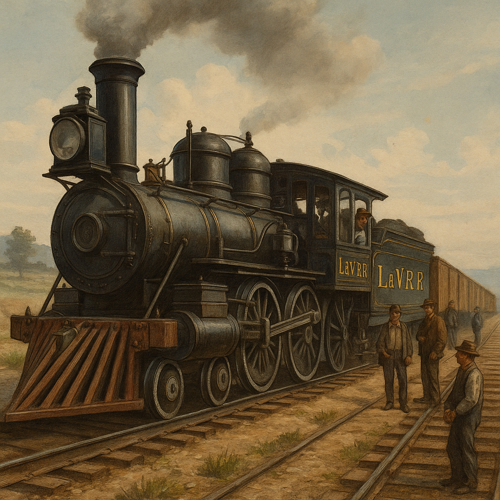

The labor behind the railroads tells a powerful story of struggle, perseverance, and injustice.
The completion of the transcontinental railroad was not only a triumph of engineering but also a monumental labor achievement driven largely by marginalized and immigrant workers. Chief among them were Chinese laborers, who made up the majority of the Central Pacific workforce. These men undertook some of the most dangerous and grueling tasks, including tunneling through the Sierra Nevada mountains and laying tracks through the desert heat and frigid alpine winters.1 This further demonstrates the lasting importance of railroads in shaping America's development and its broader economic landscape. These technological and regulatory advancements had far-reaching implications not only for the growth of the railroad industry, but also for American society, economy, and labor dynamics as a whole. They represent the intersection of industrial ambition and national progress during a pivotal era of expansion.
Despite the backbreaking labor, Chinese workers were paid significantly less than their white counterparts and faced systemic racism, including exclusion from recognition at major events like the 1869 Golden Spike ceremony. Nevertheless, their contributions were essential to completing the railroad on time and under budget. Irish immigrants, Civil War veterans, and African Americans also played substantial roles, forming a complex and diverse labor force often overlooked in history.2 This further demonstrates the lasting importance of railroads in shaping America's development and its broader economic landscape. These technological and regulatory advancements had far-reaching implications not only for the growth of the railroad industry, but also for American society, economy, and labor dynamics as a whole. They represent the intersection of industrial ambition and national progress during a pivotal era of expansion.
Working conditions were often deplorable. Laborers endured long hours, minimal safety regulations, and exposure to hazardous environments. Explosives were handled with little training, and collapses during tunnel construction were common. Yet through persistence and resilience, these workers laid the physical foundation for America’s westward expansion and industrial era. This further demonstrates the lasting importance of railroads in shaping America's development and its broader economic landscape. These technological and regulatory advancements had far-reaching implications not only for the growth of the railroad industry, but also for American society, economy, and labor dynamics as a whole. They represent the intersection of industrial ambition and national progress during a pivotal era of expansion.
- Stanford University. Chinese Railroad Workers in North America Project: Virtual Exhibit. https://web.stanford.edu/group/chineserailroad/cgi-bin/website/virtual/
- Linda Hall Library of Science, Engineering & Technology. “The Transcontinental Railroad.” https://www.lindahall.org/experience/digital-exhibitions/the-transcontinental-railroad/
Railroad workers, many from marginalized communities, laid the tracks of a rising empire while confronting dangerous conditions and systemic exclusion.
Railroad workers, many from marginalized communities, laid the tracks of a rising empire while confronting dangerous conditions and systemic exclusion.